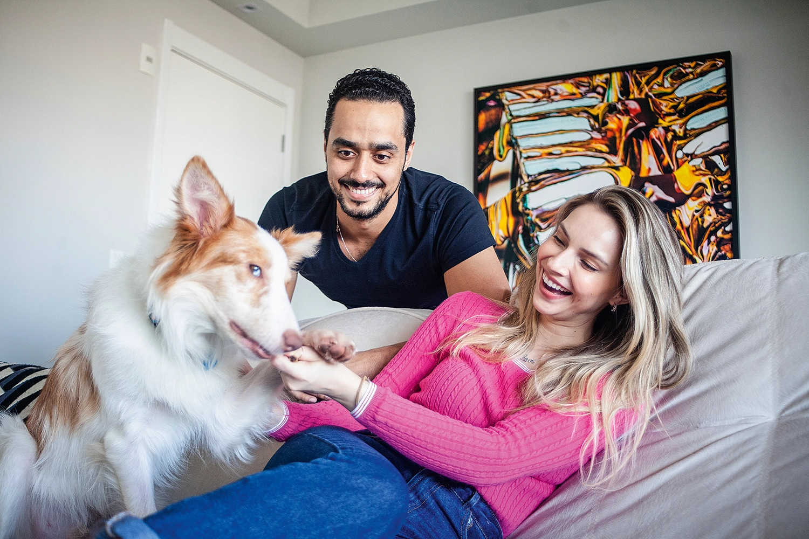
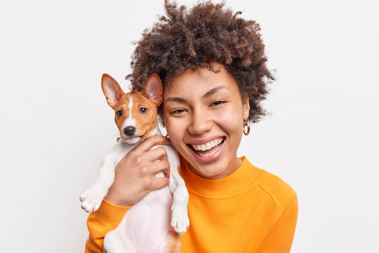
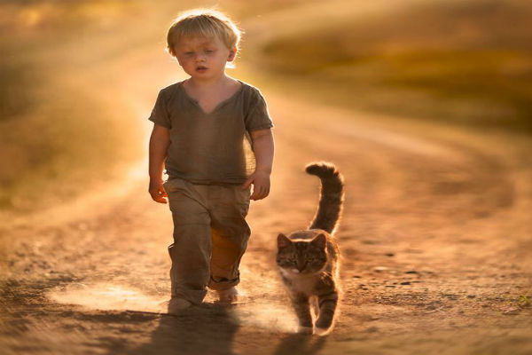
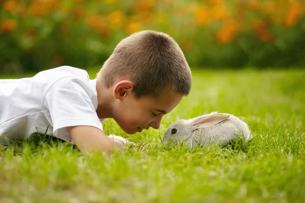
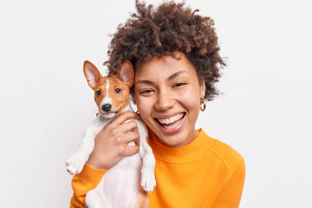
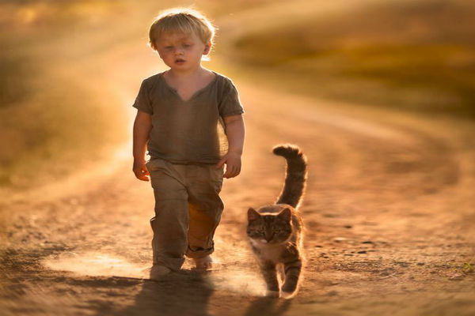
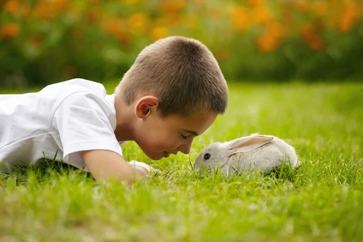
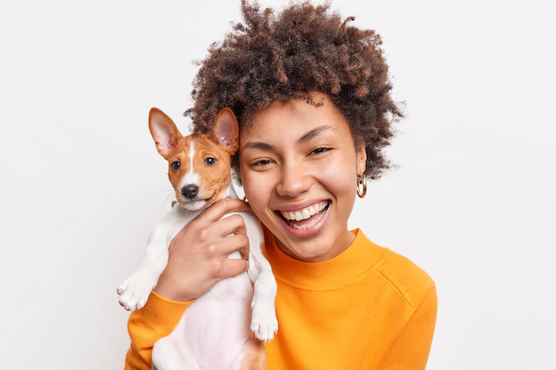
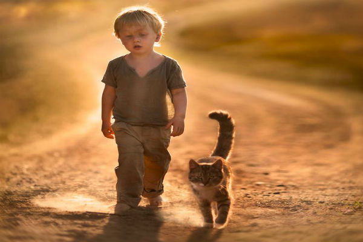
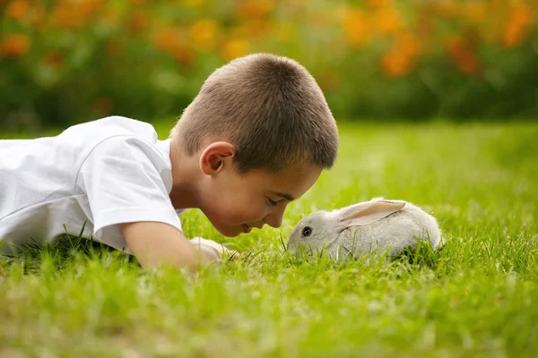

Ter um animal em casa traz benefícios para a saúde mental e o desenvolvimento infantil. Ter um pet é um ato de amor que beneficia não só os bichinhos, mas também os seres humanos. Os laços de afeto dessa relação têm um grande impacto na saúde mental das pessoas que possuem um animal de estimação.
Origem da palavra pet
Pet palavra da língua inglesa cada vez mais popular no vocabulário brasileiro para se referir aos animais de estimação. Apesar de ter virado "moda" de algumas décadas para cá, o termo pode ser mais antigo do que imaginamos. De acordo com o professor de inglês e escritor Denilso de Lima, que assina o portal Inglês na Ponta da Língua, por volta do fim do século 14, na Escócia e no norte da Inglaterra, o termo ‘pet’ surgiu com o sentido de ‘animal domado’.
Acredita-se que a origem esteja ligada à palavra ‘petty’, no sentido de ‘pequeno', que, por sua vez, teria influência na francesa ‘pettit’. Já ‘pettit' teria saído do latim vulgar ‘pittinus’. Uma verdadeira miscelânea linguística. Há registros de que em 1530, o termo ‘pet’ já era usado para se referir a ‘animal favorito’, ‘animal de estimação’ - na língua inglesa, essa palavra pode ser usada ainda no sentido de classificar algo ou alguém como ‘predileto’ ou ‘favorito’.
Dicas básicas para adotar de maneira correta o seu pet
Adotar um pet é uma decisão que deve ser tomada com muita atenção e responsabilidade, afinal de contas é uma vida que está em jogo. Se a pessoa pretende se tornar um pai ou mãe de pet, é necessário avaliar algumas condições fundamentais antes de levar o bichinho para casa.
O primeiro passo é analisar o tempo disponível para cuidar do pet. Se o candidato a tutor não dispor de um tempo para levar o pet para passear ou ao veterinário, por exemplo, fica difícil, afinal até mesmo os animais de estimação precisam sair da rotina.
Outro ponto que faz parte das dicas de adoção responsável é a questão financeira. Os animais de estimação precisam de ração, medicamentos, consultas e outros gastos, então, se a pessoa não estiver disposta a separar uma verba para atender essas necessidades, é melhor nem levar o bichinho para casa.
O candidato a tutor também precisa avaliar o espaço disponível para o bichinho, tanto pensando em conforto quanto pensando em segurança. O quintal ou apartamento deve ser telado para evitar acidentes ou acesso à rua, por exemplo, mas também deve ter espaço suficiente para circulação e acomodação do animal - já pensou em querer manter um dogue alemão em um apê de 50 metros quadrados?!
A questão familiar também é importante ao adotar um pet. Todos os moradores da casa precisam estar de acordo com a chegada de um animalzinho de estimação e também precisam se comprometer a ajudar nos cuidados com o pet. Sabe aquela história do “não quero saber de cachorro/gato dentro de casa”? Pois bem, melhor não arriscar nem levar o pet de surpresa.
E por último, mas não menos importante, é a questão da paciência. Sim, os pets possuem personalidade própria e precisam ser adestrados para se adequarem à rotina dos tutores; sendo assim, é importante ter paciência para lidar com as travessuras dos animaizinhos e corrigi-los sem agressão ou maus-tratos.




 




